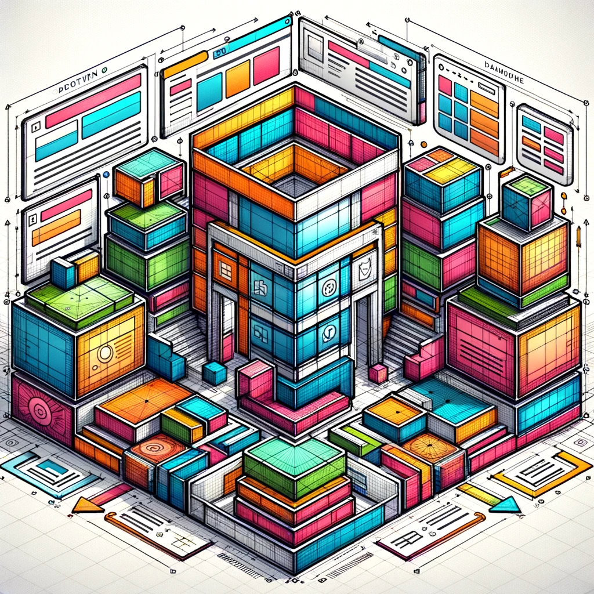

One

Hello there! I'm Ryan Steffes, a former programmer from the defense industry who decided to switch gears and venture into the vibrant world of education. Think of me as a real-life version of Indiana Jones – except instead of ancient relics, my quest is to unearth the treasures of knowledge and technology. After years of coding and decoding in the defense sector, a light bulb went off (probably an LED, considering my energy-efficient preferences), and I realized my true calling was in teaching. With a Master’s in Education already under my belt, I'm currently sharpening my skills further with master's level courses in computer science, focusing on data and AI – it's a bit like being in a 'Big Bang Theory' episode, but with less whiteboard equations and more practical applications. My adventure in education began at Wake Tech, where I've had the privilege of serving as both an adjunct and a full-time instructor. Here, I've learned that teaching is an art form, a delicate dance between sharing knowledge and igniting curiosity. My classrooms are dynamic labs where ideas are both challenged and cherished, much like the brainstorming sessions in 'Silicon Valley'. I firmly believe that every student is a unique algorithm, capable of solving complex problems in their own ingenious ways. My role? To be the debugger, the guide, the occasional 'Google' when the need arises. In my classes, we don't just learn about code; we explore the impact of technology on our lives, like how AI is slowly turning sci-fi fantasies into reality. Remember 'The Matrix'? Well, we're not that far off! As I delve deeper into the intricate world of computer science, I often find parallels with the challenges faced by educators. Both fields require creativity, patience, and a never-ending thirst for learning. My goal is to blend these worlds, creating a learning experience that's as engaging as a plot twist in 'Sherlock'. Outside the classroom, I'm a continuous learner, often found with my nose in the latest tech journals or experimenting with new programming languages – a bit less dramatic than 'Mr. Robot', but equally thrilling. I encourage my students to adopt a similar mindset, reminding them that like in 'Doctor Who', education is a time machine that can take you to incredible places. So, whether you're a budding programmer, a data enthusiast, or just curious about how technology is shaping our future, you've come to the right place. Let's embark on this journey together, unraveling the mysteries of computer science, one byte at a time. And who knows? Along the way, we might just create something that would make even the crew of 'Star Trek' proud. Beam us up, Scotty – we're ready for this educational adventure!